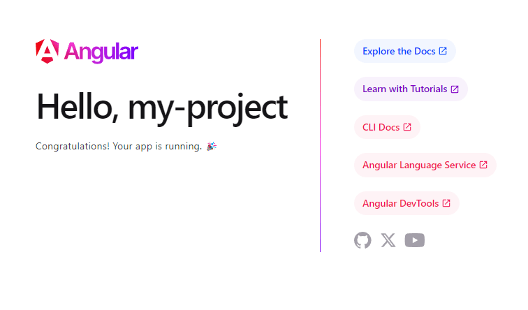

<section>
  <div class="block" data-type="text" data-name="title" style="left:38px;top:86px;width:550px;height:auto;z-index:10;text-align:left">
    <h2>Create a new project</h2>
  </div>
  <div class="block" data-type="text" data-name="text-1" style="left:38px;top:160px;width:550px;height:auto;z-index:11;text-align:left">
    <ol>
	<li>
	<pre><span style="color:#ff8c00">ng new playground</span></pre>
	</li>
	<li>Just pick whatever options you feel like. But do select <span style="color:#ff8c00">SCSS 😁</span>
</li>
	<li>Run the <code><span style="color:#ff8c00">ng serve</span></code> command in the newly create folder</li>
	<li>Check the browser and then exit <code><span style="color:#ff8c00">ng serve</span></code>
</li>
	<li>Finally delete the folder again 💀</li>
</ol>
  </div>
  <div class="block" data-type="image" data-name="image-1" data-keep-ratio style="left:614.8px;top:195.155px;width:585.2px;height:343.689px;z-index:13">
    
  </div>
</section>
